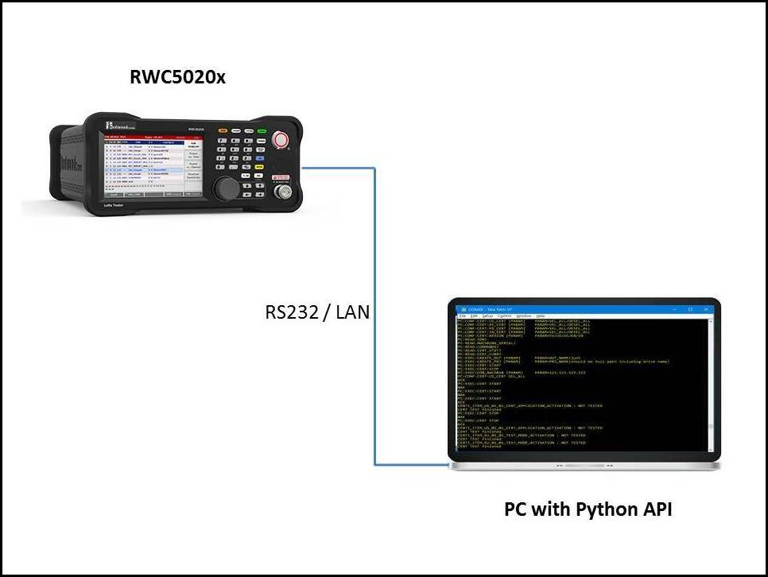

How to use Python Library¶
Prerequisite¶
- Python 3
- PySerial
API Setup¶
- To access RWC5020x tester using Python Library, please follow the setup shown in the diagram.
Import Library¶
Example for importing class library:
from rwclib.cRWC5020x import RWCTesterApi
Then create object to access class methods (pass serial port or Ethernet port & ip address as constructor argument)
1 2 3 4 5 6 | # ---Serial communication---
obRwcLib = RWCTesterApi('/dev/ttyUSB0')
obRwcLib.open_port()
devIdn = obRwcLib.query_identification()
myMenu = obRwcLib.set_mode('GWT')
obRwcLib.close_port()
|
(Or)
1 2 3 4 5 6 | # ---Ethernet communication---
obRwcLib = RWCTesterApi('5001', '192.168.0.33')
obRwcLib.open_port()
devIdn = obRwcLib.query_identification()
myMenu = obRwcLib.set_mode('GWT')
obRwcLib.close_port()
|
For know more about class methods, please refer next page.